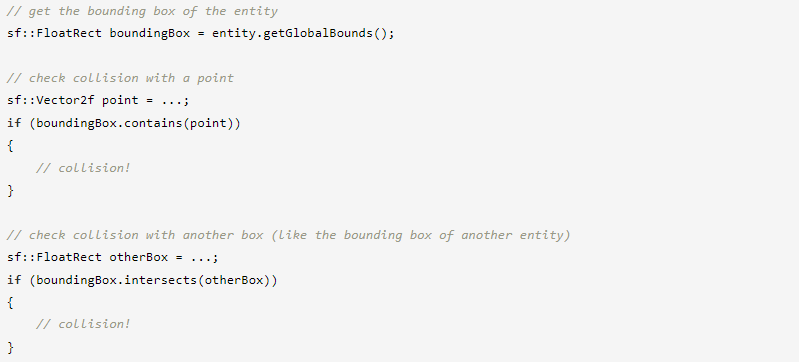

⇐Создание собственных сущностей с массивами вершин
Положение, вращение, масштаб: преобразование объектов
Преобразование объектов SFML
Все классы SFML (спрайты, текст, фигуры) используют один и тот же интерфейс для преобразований: sf::Transformable. Этот базовый класс предоставляет простой API для перемещения, поворота и масштабирования ваших объектов. Он не обеспечивает максимальной гибкости, но вместо этого определяет простой для понимания и использования интерфейс, который охватывает 99 % всех вариантов использования — оставшийся 1 % см. в последних главах.
sf::Transformable (и все производные от него классы) определяет четыре свойства: положение (position), вращение (rotation), масштаб (scale) и начало координат (origin). Все они имеют свои соответствующие геттеры и сеттеры. Все эти компоненты преобразования не зависят друг от друга: если вы хотите изменить ориентацию объекта, вам просто нужно установить его свойство поворота, вам не нужно заботиться о текущем положении и масштабе.
Положение (Position)
Положение (Position) - это... позиция объекта в 2D-мире. Я не думаю, что это нуждается в дополнительных пояснениях :).
По умолчанию объекты располагаются относительно их верхнего левого угла. Позже мы увидим, как изменить это с помощью свойства origin.
Вращение (Rotation)
Вращение (Rotation) — это ориентация объекта в 2D-мире. Он определяется в градусах по часовой стрелке (поскольку ось Y указывает вниз в SFML).
Обратите внимание, что SFML всегда возвращает угол в диапазоне [0, 360) при вызове getRotation.
Как и в случае с положением, по умолчанию вращение выполняется вокруг верхнего левого угла, но это можно изменить, установив исходную точку.
Масштаб (Scale)
Масштабный коэффициент позволяет изменять размер объекта. Масштаб по умолчанию равен 1. Установка значения меньше 1 делает объект меньше, больше 1 — больше. Также допускаются отрицательные значения масштаба, так что вы можете зеркально отразить объект.
Начало координат (Origin)
Начало является центральной точкой трех других преобразований. Позиция объекта является положением его начала, его вращение выполняется вокруг начала координат, а также применяется масштабирование относительно начала координат. По умолчанию это верхний левый угол объекта (точка (0, 0)), но вы можете установить его в центр объекта или, например, в любой другой угол объекта.
Чтобы не усложнять, для всех трех компонентов преобразования существует только один источник. Это означает, что вы не можете расположить объект относительно его верхнего левого угла, вращая его, например, вокруг центра. Если вам нужно сделать такие вещи, взгляните на следующие главы.

Обратите внимание, что изменение исходной точки также меняет то, где объект отображается на экране, даже если его свойство position не изменилось. Если вы не понимаете почему, прочтите этот урок еще раз!
Преобразование собственных классов
sf::Transformable создан не только для классов SFML, он также может быть базой (или членом) ваших собственных классов.
Чтобы получить окончательное преобразование объекта (обычно необходимое при его рисовании), вызовите функцию getTransform. Эта функция возвращает объект sf::Transform. См. ниже пояснение об этом и о том, как использовать его для преобразования объекта SFML.
Если вам не нужен/не нужен полный набор функций, предоставляемых интерфейсом sf::Transformable, не стесняйтесь просто использовать его как член и предоставлять свои собственные функции поверх него. Он не абстрактный, поэтому его можно создать, а не использовать только как базовый класс.
Пользовательские преобразования
Класс sf::Transformable прост в использовании, но он также ограничен. Некоторым пользователям может потребоваться больше гибкости. Возможно, им потребуется указать окончательное преобразование как пользовательскую комбинацию отдельных преобразований. Для этих пользователей доступен класс более низкого уровня: sf::Transform. Это не что иное, как матрица 3x3, поэтому она может представлять любое преобразование в 2D-пространстве.
Существует множество способов создания sf::Transform:
- с помощью предопределенных функций для наиболее распространенных преобразований (перемещение, вращение, масштабирование)
- путем объединения двух преобразований
- указав его 9 элементов напрямую
Вот несколько примеров:
К одному и тому же преобразованию можно применить несколько предопределенных преобразований. Все они будут объединены последовательно. Обратите внимание, что преобразование объекта путем объединения нескольких преобразований эквивалентно применению каждой операции в обратном порядке. Последняя операция (здесь масштаб) применяется первой, и на нее будут влиять операции над ней в коде (второй будет, например, translate(-10.f, 50.f)).

Вернемся к сути: как пользовательское преобразование можно применить к графическому объекту? Просто: передайте его функции рисования.
... что на самом деле является сокращением для:
Если ваша сущность представляет собой sf::Transformable (спрайт, текст, фигура), который содержит собственное внутреннее преобразование, внутреннее и переданное преобразование объединяются для получения окончательного преобразования.
Ограничивающие рамки
После преобразования объектов и их рисования вы можете выполнить некоторые вычисления, используя их, например. проверка на коллизии.
Сущности SFML могут дать вам свою ограничивающую рамку. Ограничивающая рамка — это минимальный прямоугольник, содержащий все точки, принадлежащие объекту, со сторонами, выровненными по осям X и Y.
Ограничивающая рамка очень полезна при реализации обнаружения столкновений: проверка относительно точки или другого прямоугольника, выровненного по оси, может быть выполнена очень быстро, а его площадь достаточно близка к площади реального объекта, чтобы обеспечить хорошее приближение.
Функция называется getGlobalBounds, потому что она возвращает ограничивающую рамку объекта в глобальной системе координат, т.е. после применения всех его преобразований (положения, поворота, масштаба).
Есть еще одна функция, которая возвращает ограничивающий прямоугольник объекта в его локальной системе координат (до применения его преобразований): getLocalBounds. Эту функцию можно использовать, например, для получения начального размера объекта или для выполнения более конкретных вычислений.
Иерархии объектов (граф сцены)
С помощью пользовательских преобразований, рассмотренных ранее, становится легко реализовать иерархию объектов, в которой дочерние объекты преобразуются относительно их родителя. Все, что вам нужно сделать, это передать комбинированное преобразование от родителя к дочерним элементам, когда вы их рисуете, до тех пор, пока вы не достигнете финальных рисуемых объектов (спрайтов, текста, фигур, массивов вершин или ваших собственных рисунков).